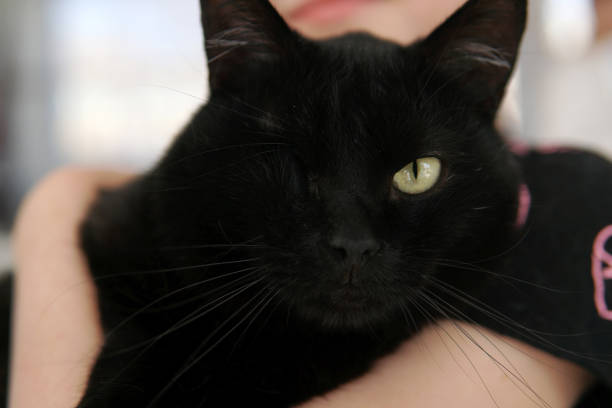
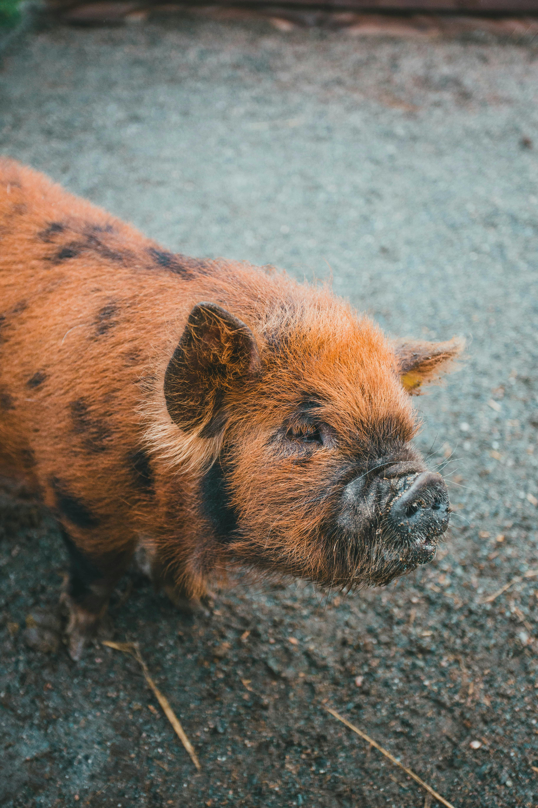
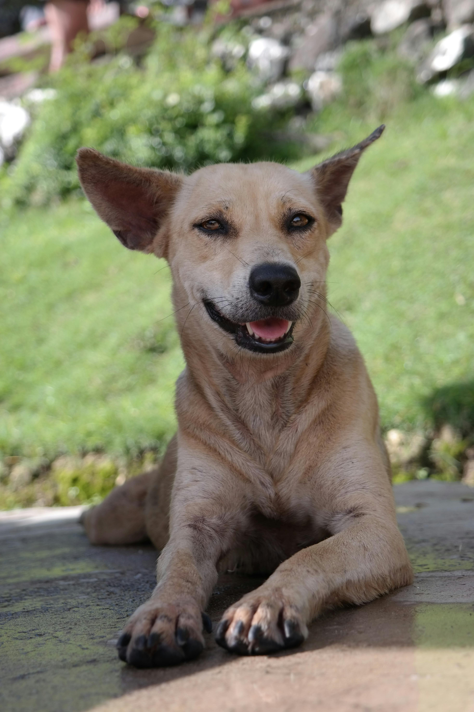
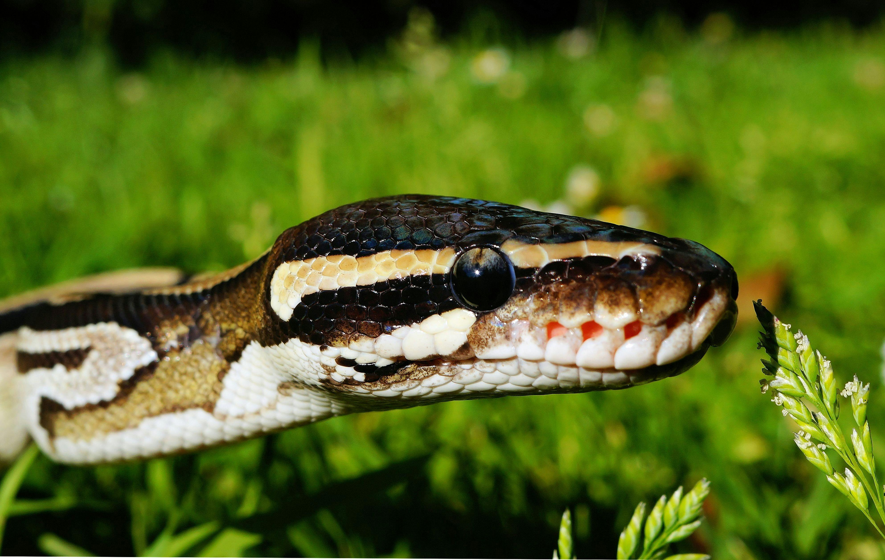
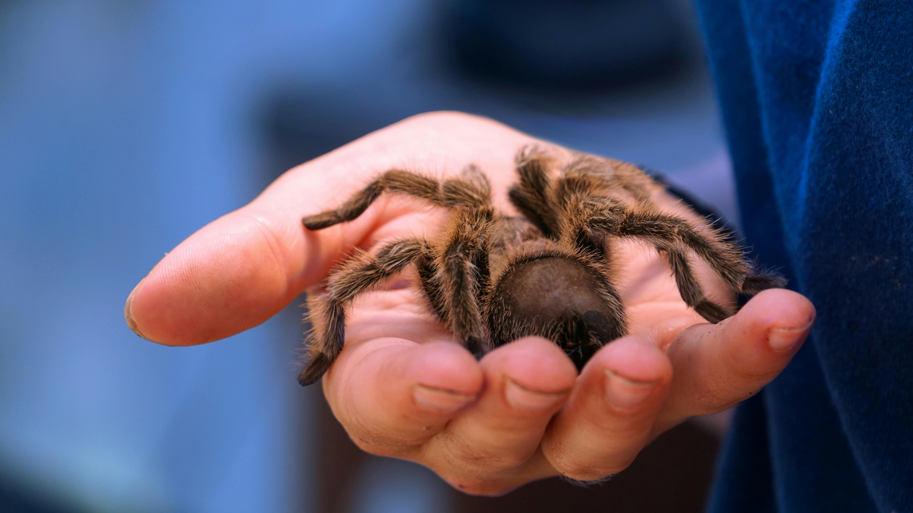
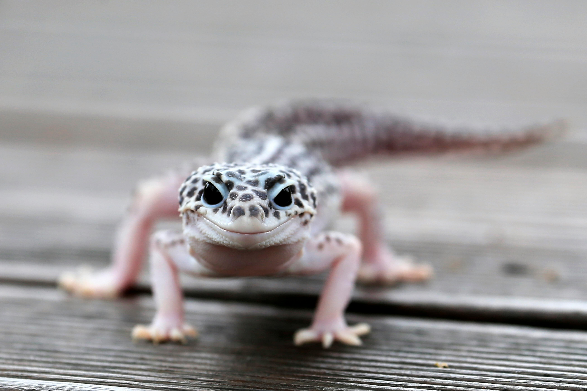

Adopting from Saving Angels allows you to help many animals in need. Please meet your new beloved pet before taking them home to make sure that they are the right fit.
Adoption Fees Vary: $25-250
Vaccination Fees Vary $50-150
|  | Willy | 5 years | Male | Willy is a mellow fellow who loves to lounge and be close to those around him. He is a sweetheart who may need extra help due to having one eye. |  | Babe | 3 Years | Female | Babe is one of the most curious pigs that we have ever met. She is mischievous and tries to get into everything. Please note that she is not a teacup pig. |  | Dolly | 8 Years | Female | Dolly is one of the oldest shelter animals we have. She has stomach issues which requires her to be on a special diet. She also has arthritis which makes her move a bit slower but she makes up for it by having the essence of a puppy. |  | Linguini | 1 year | Male | Linguini is used to being handle and loves being able to explore outside of his enclosure. He would make the perfect travel companion because once he's comfortable he is content. |  | Darla | 2 years | Female | Darla is shy and will take longer to warm up to her new owner. She most likely will hide and only come out for food until she trusts you. |  | Leeroy | 6 months | Male | Leeroy loves to be around people. He can be handled with ease. He is super easy going and can be handled by children with ease but his tail will fall off if messed with. |